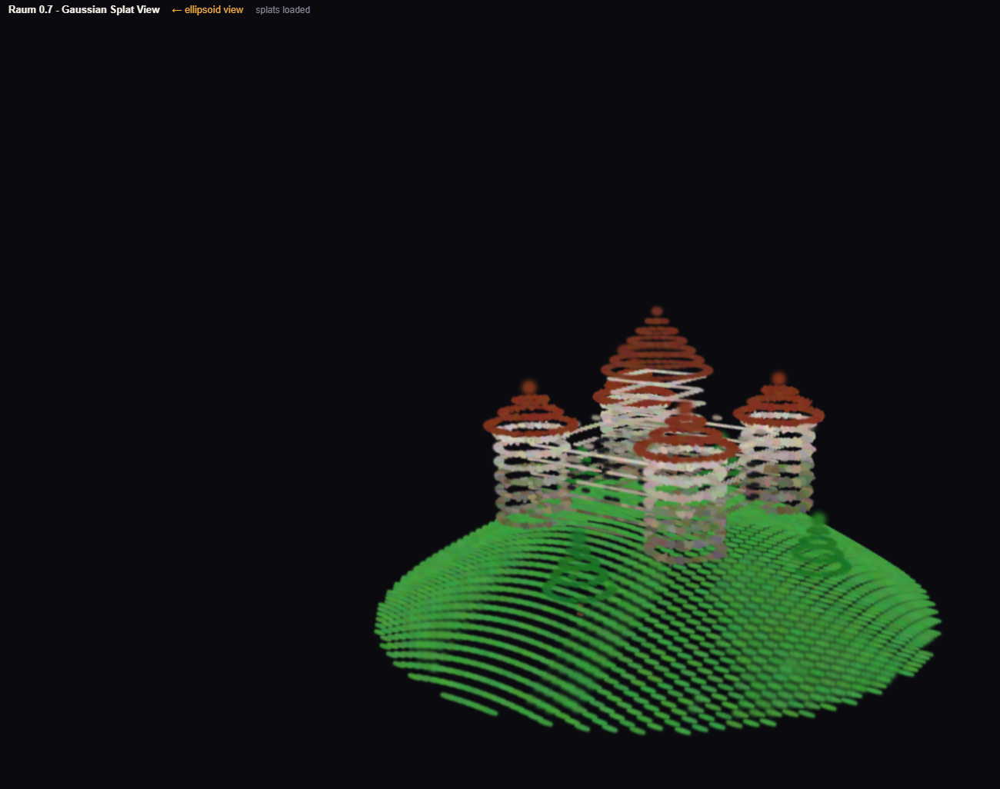
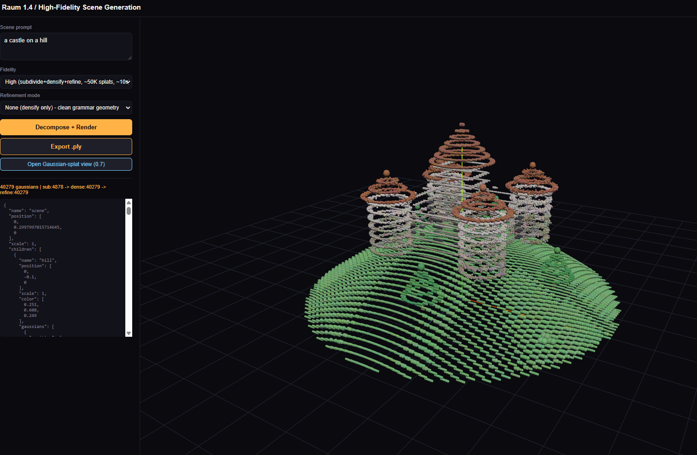

A non-commercial AI research laboratory studying Semantic Gaussian Splatting — a single primitive where language, geometry, and physics are projections of one representation.
Two intertwined programs: the foundations of an alternative model architecture, and its first application to structured 3D generation.
Semantic Gaussian Splatting (SGS) — an alternative architecture to the transformer, where one Gaussian primitive carries meaning, appearance, and behaviour.
Turning natural language into structured, editable 3D — named parts instead of a single opaque blob.
Models and applications that put the research to work, from a browser-sized base model to a full text-to-3D pipeline.
A nano-scale base model — ~100M parameters, trained on Wikipedia. The reference SGS language model and the testbed for blob-based retrieval.
The next-scale SGS language model — targeting ~1 billion parameters. The base that Raum will run on.
The text-to-3D model: prompt-conditioned generation of Gaussian-splat scenes via recursive semantic-to-geometric decomposition.
SGS multimodality: encoding audio as Gaussian splats. Probing whether the same primitive that renders meaning and geometry can also synthesize sound.
The interactive pipeline — grammatic decomposition, semantic encoder, and real-time rendering of named, editable parts, with .ply export to game engines and 3D tools.
Browser-native chat and generation on the SGS base model — Planck running locally, Hertz served via API.
The audio-synthesis surface of SGS: turning Gaussian-splat representations into sound — studio, voice, and field.


.ply export.Formal and applied work from the lab. Where claims are mathematical, they are machine-verified in Lean 4.
Proves that every softmax-attention weighting can be reproduced exactly by alpha-compositing, but not the reverse — alpha-compositing also yields hard sparsity and sub-unity weight sums. The full result is machine-verified in Lean 4 with Mathlib, zero unproven assertions.
Read PDF →Introduces RSGD: pairing a small language model (the Decomposer) with a Gaussian-splat renderer to turn prompts into hierarchical composition trees that bottom out at individual 3D Gaussian primitives — structured, editable scenes instead of monolithic geometry.
Read PDF →Extends the Gaussian primitive with a physical-property embedding so the same scene that drives rendering also drives physics — correlating what something means, what it looks like, and how it behaves. Six of its formal claims are proven in Lean 4.
In preparation